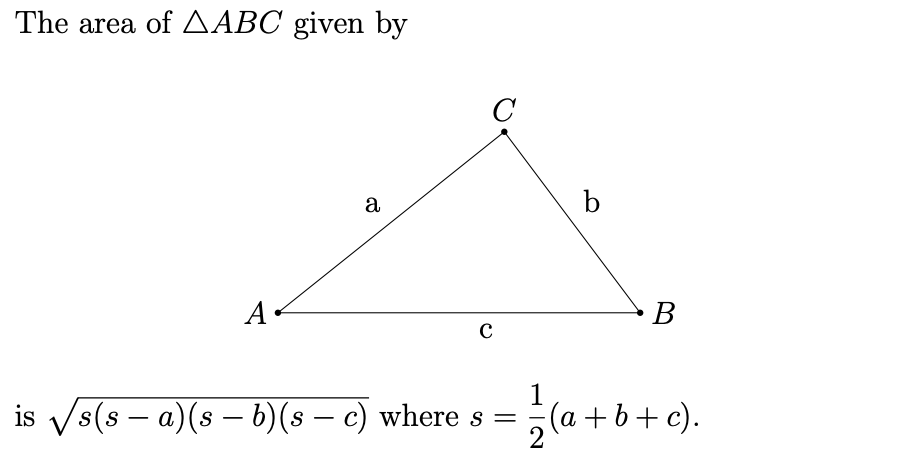
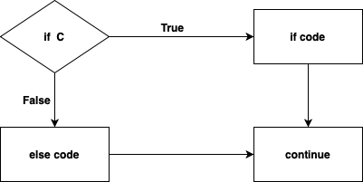
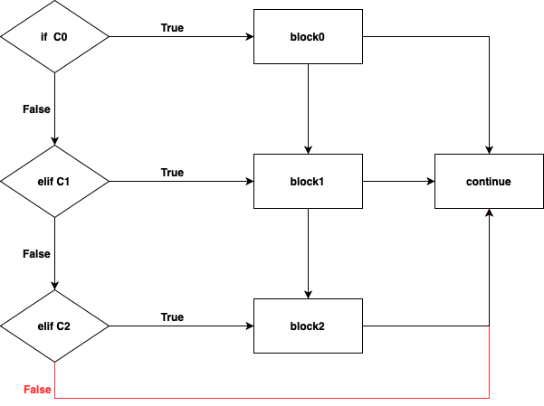
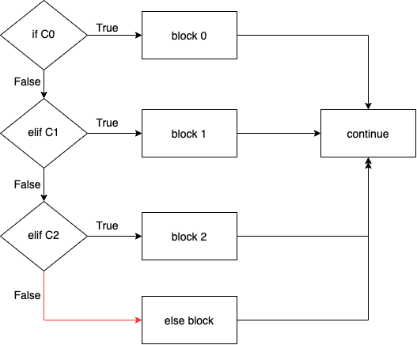
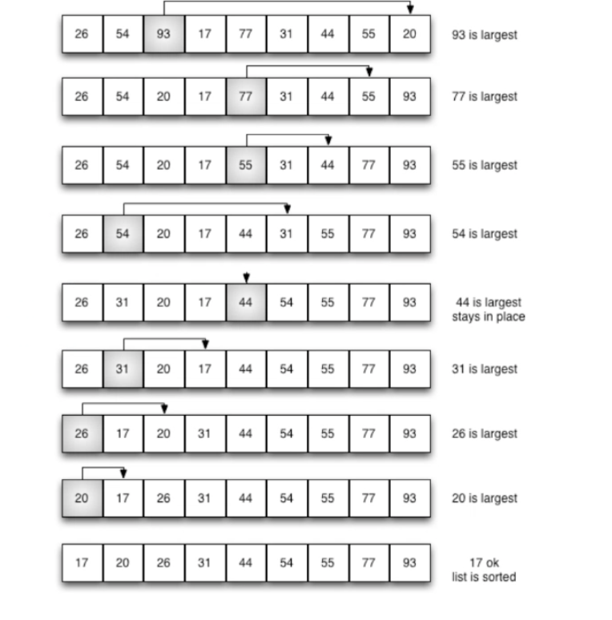
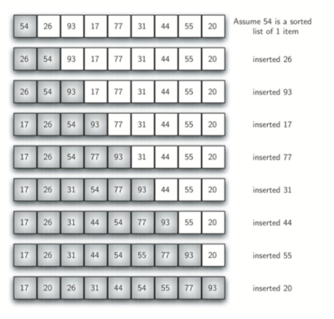
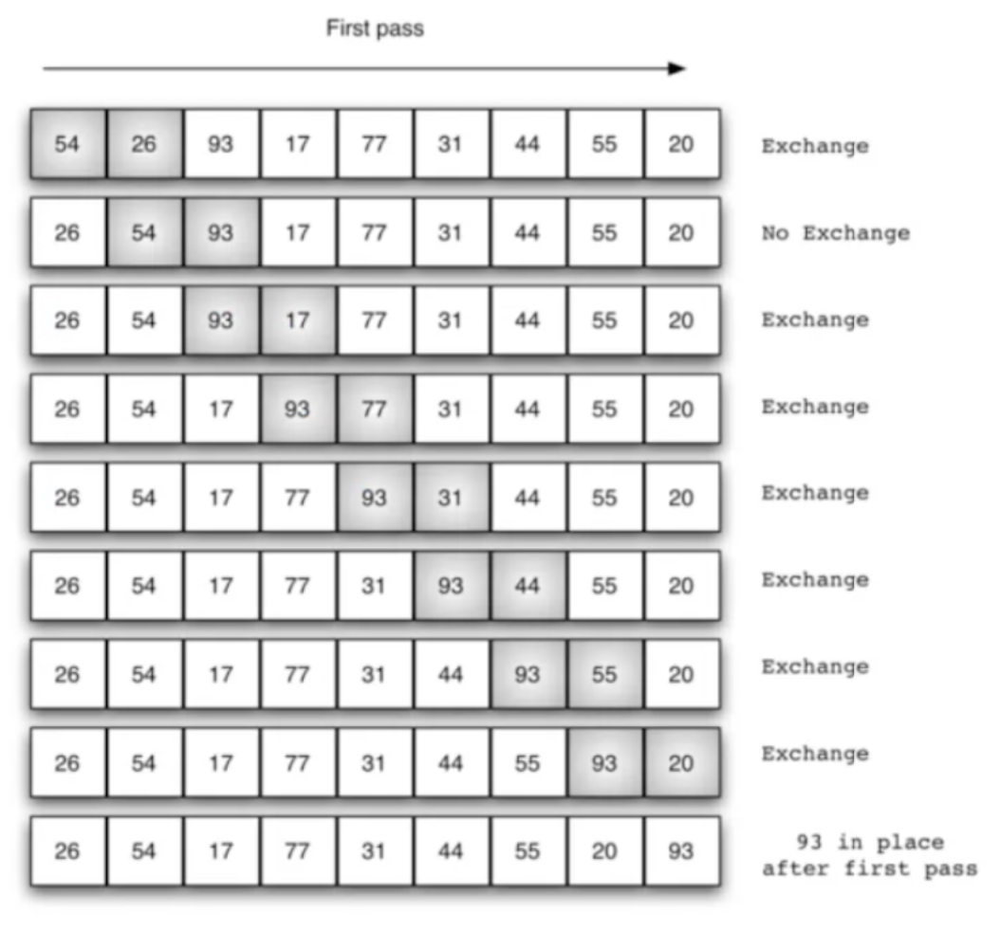
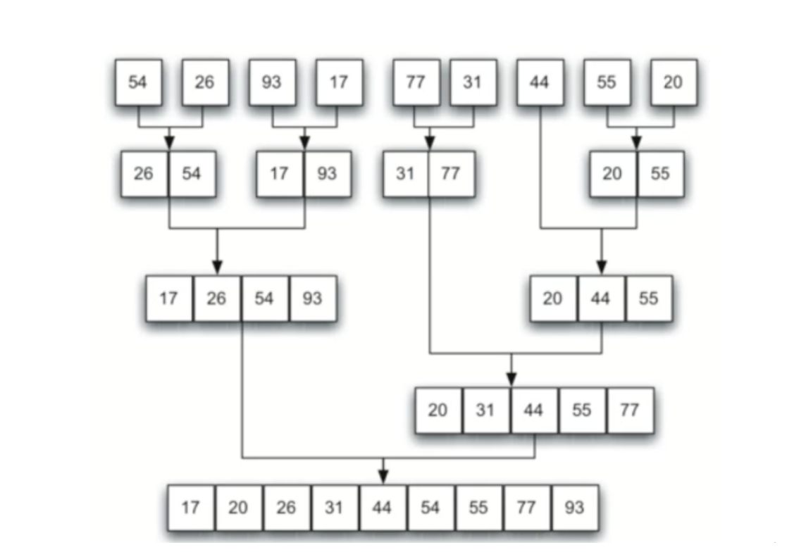

CSC108H5F Notes
Table of Contents
- 1. Notes
- 2. Python As A Calculator (Operations)
- 3. Designing Functions
- 4. Return Statement
- 5. Improving Our Functions (Doc Strings)
- 6. Logical Operations and Constants
- 7. Scope (Global and Local Variables)
- 8. Design Recipe
- 9. Doctest
- 10. String
- 11. Methods
- 12. If Statement
- 13. Useful Python Knowledge
- 14. For Loop
- 15. Nesting For-Loops
- 16. While Loop
- 17. List
- 18. Files
- 19. CSV
- 20. Dictionary
- 21. Tuple
- 22. Nesting Dictionary
- 23. Lazy Literature
- 24. Doctest
- 24.1. Sample Test
- 24.2. Doctest Outputs
- 24.3. Factorial (Corrected Version)
- 24.4. Writing Good Doctests
- 24.5. Black-Box Approach
- 24.6. White Space
- 24.7. Sets
- 24.8. Mulitiline Docstring
- 24.9. White-Box Approach
- 24.10. Levels of Testing
- 24.11. Unit Testing
- 24.12. Example
- 24.13. Code Coverage
- 24.14. Teseing Tips
- 25. Regular Expressions (Regex)
- 26. Algorithms
- 27. Timing and Complexity
- 28. Object Oriented Programming (OOP)
- 29. Nesting
1 Notes
2 Python As A Calculator (Operations)
2.1 Standard Arithmetic
| Operators | Meaning | Usage | Result |
|---|---|---|---|
+ |
addition | >>> 3 + 2 |
5 |
- |
subtraction | >>> 3 - 2 |
1 |
* |
multiplication | >>> 3 * 2 |
6 |
/ |
division | >>> 3 / 2 |
1.5 |
2.2 Other Operations
| Operators | Meaning | Usage | Result |
|---|---|---|---|
// |
integer(floor) division | >>> 3 // 2 |
1 |
** |
Exponentiation (Power) | >>> 3 ** 2 |
9 |
% |
Modulus (Remainder) | >>> 3 % 2 |
1 |
Notice:
floor division returns floor value for both integer and floating point arguments instead of rounding the number.
For instance,
>>> 10 / 9 1.1111111111111112 >>> 10 //9 1 >>> 10 / 6 1.6666666666666667 >>> 10 // 6 1
Order of Operations in Python
This is documented here (Python Documentation / Expressions / Operator-Precedence):
- P Parentheses, then
- E Exponents, then
- MD Multiplication and division, left to right, then
- AS Addition and subtraction, left to right
For instance,
>>> 2 + 3 * 2 - 1 7 >>> (2 + 3) * 2 - 1 9
2.3 Type of Variable
>>> 1 / 99999999999999999999999999 1e-26 >>> 1 / 99999999999999999999999999999999999 1e-35 >>> 1 / 999999999999999999999999999999999999999999999999999999999999999999 1e-66 >>> 1 / 999999999999999999999999999999999999999999999999999999999999999999 + 1 1.0
>>> type(4) <class 'int'> >>> type(4 / 2) <class 'float'> >>> type(5 / 2) <class 'float'> >>> type(5 // 2) <class 'int'>
Python has ability to figure out the types of a variable as the programruns.
When the result of division goes too small:
However in python, a number cannot be divided by 0 but can be divided by infinity:
>>> 1/0 Traceback (most recent call last): File "<stdin>", line 1, in <module> ZeroDivisionError: division by zero >>> 1 / float('inf') 0.0 >>> 1 // float('inf') 0.0
Notice computer gives the finite number of digits
2.4 Division Algorithm
Let x and y be positive integers. There is a unique quotient q and
unique remainder r with 0 ≤ r < y satisfying: \[
x = q * y + 2
\] In Python this means we have
x == (x // y) * y + (x % y)
2.4.1 Task
Predict the following output without using your computer
| Expression | Result | Type of Result |
|---|---|---|
9 / 3 |
3 | float |
9 // 3 |
3 | int |
9 % 3 |
0 | int |
2.5 Variable
Sometimes it is expedient to give values a name. These names are called varibles.
For instance,
>>> x = -2 >>> y = 3 >>> q = x // y >>> r = x % y >>> x - (q * y + r) 0
Equal (=) in Python is for assignment does not denote equality as it
does in mathematics.
>>> x = 1 >>> x 1 >>> x = x + 1 >>> x 2
Whatever on the right-hand side goes into the left-hand side of the
equal (=) sign.
Notice in mathematics that
\[x = x + 1 => 0 = 1\]
and so is and "illegal" statement.
We can only assign a number into a variable:
>>> 1 = 1 File "<input>", line 1 SyntaxError: cannot assign to literal
Instead, Python does equality comparison with ==:
>>> 1 == 1
True
Also, you can assign a variable into another variable only after it is defined:
x = y Traceback (most recent call last): File "<input>", line 1, in <module> NameError: name 'y' is not defined
2.5.1 Task
What is y after entering the following?
>>> x = 2 >>> y = 4 >>> x = 1 # ***Answers #* y = 4**
What are x and y after entering the following?
>>> x = 1 + 4 >>> y = x - 1 >>> x = y + 1 * x >>> x = y // x # ***Answers* # x = 0 y = 4**
3 Designing Functions
3.1 Functions
Unlike variables, Python functions are directly analogous to that of mathematics and can also be named.
For instance, a parabola in mathematics is given by function
\[f(x)=x^2\]
and in Python we write
>>> def f(x): ... return x**2 >>> f(3) 9
In Python four spaces/indents are significant and are used to associate lines of code with control structures (in this case function definition).
>>> def□f(X): ... □□□□return□x**2
If you get errors along the lines of
IndentationError: unexpected indent
check the formatting (spaces/indents).
3.1.1 Question 1
What is the value of x after entering the following?
>>> def f(x, y): ... return x % y >>> x = f( -5(5, 2) - 2, f(20, 7)) # work from inside of function to outside >>> x 3
4 Return Statement
return is a reserved word (one that cannot be assigned by us). It is used to designate what value the function should return while also terminating the function itself.
4.1 Definition 1 (return)
The return statement causes a function to exit and hand back a value to its caller.
For instance,
4.1.1 Question 2
# What outputs? >>> def example(x): ... print(1*x) ... print(2*x) ... return 3*x # terminate the program and return 3*x >>> a = example(1) 1 2
4.1.2 Question 3
# What outputs? >>> def example(x): ... print(1*x) ... return 3*x # terminate the program and return 3*x ... print(2*x) >>> a = example(1) 1 >>> a 3
4.1.3 Question 4
# What outputs? >>> def example(x): ... return 3*x # terminate the program and return 3*x ... return 2*x # the following code won't be executed ... print(1*x) >>> a = example(1) >>> a 3
4.1.4 Question 5
# What outputs? >>> def example(x): ... print(2*x) ... return # terminate the program and return nothing (None) >>> a = example(1) 2 >>> a # print nothing (None) None >>> type(a) <class 'NoneType'>
4.1.5 Task 1 (Area of Triangle)

Figure 1: Notes%2041f1f3a2565c4c45811ad8f26b5d3e2b/Screen_Shot_2020-09-14_at_11.39.10_PM.png
In Python we write:
def triangle_area(a: int, b: int, c: int) -> float: s = a + b + c s = s / 2 return (s * (s - a) * (s - b) * (s - c)) ** 0.5 # there are no actual type-checking >>> triangle_area(1.1, 2.2, 3.3) 1.194989539703172
5 Improving Our Functions (Doc Strings)
def triangle_area(a: int, b: int, c: int) -> float:
"""
Computes the area of a triangle given its sides.
"""
s = a + b + c
s = s / 2
return (s * (s - a) * (s - b) * (s - c)) ** 0.5
5.1 Definition 2 (Python Function)
def function_name(arg0: type, arg1: type, ...) -> type:
"""
Short description of function for documentation.
Be concise and precise.
"""
function body
return
6 Logical Operations and Constants
6.1 Basic Operands of Logic
# Booleans >>> type(True) <class 'bool'> >>> type(False) <class 'bool'>
6.2 Definition 1 (Boolean domain)
Let \(\mathbb {B}\) denote the boolean domain where
\[\mathbb {B} = \{True, False\}\]
6.3 Definition 2 (Predicate)
Any function that maps into \(\mathbb {B}\) is called a predicate (i.e. any function that evaluates to \(True\) or \(False\)).
6.3.1 Example
The boolean function greater than
\[> : \mathbb {Z} \times \mathbb {Z} \to \mathbb {B}\]
is a predicate.
6.3.2 Question 1
Evaluate the following:
>>> 7 > 3 True >>> 7 >= 7 + 1 False
The value of True is 1, and the value of False is 0
For instance,
>>> (7 >= 7) + 1 2 >>> (9 >= 7) + 1 2 >>> (999999 >= 7) + 1 2 >>> (999999 < 7) False >>> (999999 < 7) + 1 1
6.4 Definition 4 (And)
The binary predicate 'and' is used to express that both of two statements are true and is false if either is false.
\[and : \mathbb {B} \times \mathbb {B} \to \mathbb {B}\]
Truth Table of \[and\]
| and | True | False |
| True | True | False |
| False | False | False |
6.5 Definition 5 (Or)
The binary predicate 'or' is used to express that at least one of two statements are true and is false only when both are false.
\[or : \mathbb {B} \times \mathbb {B} \to \mathbb {B}\]
Truth Table of \[or\]
| or | True | False |
| True | True | True |
| False | True | False |
6.5.1 Example
>>> True or False True >>> False or False False
6.6 Definition 7 (Not)
The logical statement 'not' is the negation of logical statement:
not True == False
and
not False == True
Distribution of not
# 1. not (a and b) == not a or not b # 2. not (a or b) == not a and not b
6.7 Short Circuits / Lazy Computation
# The first argument is True so tht the second argument won't run >>> True or 1/0 True # The first argument is False so tht the second argument will run >>> False or 1/0 Traceback (most recent call last): File "<stdin>", line 1, in <module> NameError: name 'false' is not defined >>> True or laksdahdds True # Python does not bother looking for laksdahdds >>> True or ! File "<stdin>", line 1 True or ! ^ SyntaxError: invalid syntax
6.7.1 Example
Consider that
True or False and False
is ambiguous because
(True or False) and False == False True or (False and False) == True
and thus and order of operation is necessary to resolve ambiguities.
not(a and b or c) # To eliminate ambiguity bracket the and which gets evaluated first. == not( (a and b) or c) == not(a and b) and not c == not a or not b and not c
6.7.2 Task
Determine the output.
>>> a = True + 2 # True is 1 >>> a --- >>> b = 7 * False and 1/0 # False is 0 >>> b --- >>> c = not a != b # != means 'not equal to' >>> c --- # Answer >>> a 3 >>> b 0 >>> c False
Write a function
# 1. is_even(x: int) -> bool that True when an integer is even (and False otherwise); def is_even(x: int) -> bool: return x % 2 == 0 # 2. is_odd(x: int) -> bool that returns True only when an integer is odd. def is_odd(x: int) -> bool: return not is_even(x)
7 Scope (Global and Local Variables)
7.1 Definition 1 (Scope)
Suppose a computer program creats a variable.
The scope of that variable is the collection of places (e.g. functions, procedures control strures) thta can access its value.
>>> x = 2 # global variable >>> def foo(): ... x = 7 # local varible ... return >>> foo() >>> x 2
Despite having the same name, the x of foo() is assumed local — its scope of foo()
>>> x = 2 >>> def foo(): ... global x # global variable ... x = 7 ... return >>> foo() >>> x 7
We can specify that foo should be using x as global. It is good practice to declare your globals when you use one.
>>> def foo(): ... x = 2 # loacl variable ... return x >>> foo() 2 >>> x Traceback (most recent call last): File "<stdin>", line 1, in <module> NameError: name 'x' is not defined
Outside of foo() the variable x does not exist; x is a local variable.
>>> x = 2 >>> def foo(): ... x = x + 2 ... return >>> foo() Traceback (most recent call last): File "<stdin>", line 1, in <module> File "<stdin>", line 2, in foo UnboundLocalError: local variable 'x' referenced before assignment
When foo creates x it becomes local and thereby has no value at the time of assignment.
7.1.1 Task
# Task 1 >>> x = 2 >>> def foo(): ... global x ... x = x + 2 ... return >>> foo() >>> x ___ # Answer: 4 >>> foo() >>> x ___ # Answer: 6
# Task 2 >>> x = 5 >>> def foo(x): ... return x >>> foo(7) ___ # Answer: 7 >>> x ___ # Answer: 5
Despite having the same name, there are two x's: one with a global scope and another with local.
# Task 3 >>> x = 5 >>> def foo(y): ... return x*y >>> foo(7) ___ # Answer: 35 >>> foo(x) ___ # Answer: 25
Globals and locals can be used in mixed computation.
8 Design Recipe
8.1 Step 1
Pick a short, descriptive, name for the function. A good name answers the question "What does your function do?"
is_prime would be a good name for a function that tests if a number is prime or not.
8.2 Step 2
Write your function header with a doctoring. Assume your fumction works already and give examples of how to use it.
def is_prime(x: int) -> bool: """ >>> is_prime(7) True >>> is_prime(8) False """
8.3 Step 3
Write a short and concise description of your function.
def is_prime(x: int) -> bool: """ Return True only when x is a prime >>> is_prime(7) True >>> is_prime(8) False """
8.4 Step 4
Write your function. Return your answer.
def is_prime(x: int) -> bool: """ Return True only when x is a prime >>> is_prime(7) True >>> is_prime(8) False """ return answer #TODO
8.5 Step 5
Test your function. Be sure to include corner cases.
9 Doctest
You will use doctests yo test your code!
Try run the follwoing codes:
import doctest def area_rectangle(length: float, width: float) -> float: """ Return the area of a rectangle >>> area_rectangle(1.0, 5.0) 5.0 >>> area_rectangle(1.5, 10.0) 15.0 >>> area_rectangle(1.0, 1.0) #yes, this is an incorrect test 5.0 """ return length * width doctest.testmod(verbose=True)
Notice the commands:
import doctest doctest.testmod(verbose=True)
The RESULT shows following information:
Trying:
area_rectangle(1.0, 5.0)
Expecting:
5.0
ok # get the correct output
Trying:
area_rectangle(1.5, 10.0)
Expecting:
15.0
ok # get the correct output
Trying:
area_rectangle(1.0, 1.0) #yes, this is an incorrect test
Expecting:
5.0
**********************************************************************
File "test.py", line 11, in __main__.area_rectangle
Failed example:
area_rectangle(1.0, 1.0) #yes, this is an incorrect test
Expected:
5.0
Got:
1.0 # did get the correct output
1 items had no tests:
__main__
**********************************************************************
1 items had failures:
1 of 3 in __main__.area_rectangle
3 tests in 2 items.
2 passed and 1 failed.
***Test Failed*** 1 failures.
10 String
10.1 Definition 1 (String)
Anything (with some exceptions) enclosed by single-quotes ' ' or double-quotes " " is considered a string by Python.
A string is an ordered collection of the characters (e.g. unicode and ascii) allowed by the computer.
>>> "hello world" 'hello world' >>> type("hello world") <class 'str'> >>> hello world # NOTE the lack of quotes File "<stdin>", line 1 hello world ^ SyntaxError: invalid syntax
10.2 Adding Strings
>>> "hello" + "world" 'helloworld' >>> type(" ") <class 'str'> >>> space = " " >>> "hello" + space + "world" "hello world"
10.3 String Equality
>>> "hello" == "hello" True >>> "hello " == "hello" False >>> "h e l l o" == "hello" False >>> "Hello" == "hello" False
10.4 Comparing Strings
>>> "a" < "aa" True >>> "b" < "aa" False >>> "aba" < "ab" False >>> "aZ" < "aa" True
10.5 New Line
A new line is an escape character that can be used in strings to
print what is subsequent to it on a new line. The new line escape
character is \\n.
>>> "hello\\nworld" 'hello\\nworld' >>> print("hello\\nworld") hello world
Notice how a string can be stored differently than it is printed.
10.6 Tab
A tab is a fixed amount of horizontal space. How a tab is displayed depends on the program displaying it. (This is why tabs are the worst)
>>> "hello\\tworld" 'hello\\tworld' >>> print("hello\\tworld") hello world
10.7 Numbers versus Strings
>>> 3 + 7 10 >>> "3" + "7" 37 >>> 3 + "7" Traceback (most recent call last): File "<stdin>", line 1, in <module> TypeError: unsupported operand type(s) for +: 'int' and 'str' >>> str(3) + "7" 37 >>> 3 + int("7") 10 >>> float("123.456") 123.456 # This is only true for numbers! >>> 4 + float("12.3434") 16.343400000000003 >>> int("hello") Traceback (most recent call last): File "<stdin>", line 1, in <module> ValueError: invalid literal for int() with base 10: 'hello'
10.8 Substitution
There is a mechanism for printing string variables in sentences through substitution.
>>> x = "hello" >>> y = "world" >>> z = "{}ooo {}ddd".format(x,y) 'helloooo worldddd'
10.9 Length
A string length is the number of characters that comprise it.
>>> len("h") 1 >>> x = "world" >>> len(x) 5 >>> len(x+"world") == len(x) + len("world") True
10.10 Inclusion
As a string can be regarded as an ordered set we can use the element of.
>>> "h" in "hello world" True >>> x = "hello world" >>> x in "hello world" True >>> "ow" in "hello world" False
10.11 String Indexing
Because a string is ordered we can number its characters starting from zero and access them by using square brackets.
>>> x = "hello world" >>> x[0] 'h' >>> x[len(x)] Traceback (most recent call last): File "<stdin>", line 1, in <module> IndexError: string index out of range
We can also index from the end.
>>> x = "hello world" >>> x[-1] 'd'
10.12 String Slicing
Because the string's characters are numbered we can slice the string to obtain only a part of it.
>>> x = "0123456789" # So index matches character. >>> x[1:4] # grab 1st inclusice through 4th exclusive characters. '123' >>> x[0:9] '0123456789' >>> x[0:10] '0123456789'
10.13 Immutability of Strings
Something is immutable when it cannot be changed. String are immutable.
>>> "hello"[0] = "H" Traceback (most recent call last): File "<stdin>", line 1, in <module> TypeError: 'str' object does not support item assignment
11 Methods
We will eventually learn that strings are objects.
Objects have methods which are like functions but have different invocation syntax.
For instance we do not say
>>> captialize("hello") NameError: name 'capitalize' is not defined
but rather
>>> "hello".capitalize() # Note the () 'Hello'
11.1 Built-In String Methods
There are a myriad of bulit-in string methods in Python. You can review them by searching the web or doing
>>> help(str) ... capitalize(self, /) Return a capitalized version of the string. casefold(self, /) Return a version of the string suitable for caseless camparisons.
For information on a particular method do
>>> help(str.find) find(...) S.find(sub[, start[, end]]) -> int Return the lowest index in S where substring sub is found, such that sub is contained within S[start:end]. Optional arguments start and end are interpreted as in slice notation. Return -1 on failure. (END)
11.2 Interpreting Help
The funny way parameters for find are listed as
find(sub[, start[, end]]) indicates some of the parameters are
optional. Anything contained in square brackets [ ] are optional.
This rule recures, that is to say, optional parameters can have optional parameters.
The comprehensive ways of calling find are: "team".find("I"),
"team".find("I",1), "team".find("I", 1, -1) whereas find(1, -1) is
not allowed since sub is required.
11.3 Parameters and Replacement
We are displaying the (usually hidden) empty character for the
follow codes.
>>> "{}{}{}".format("aA","bB","cC") 'aAbBcC' >>> "{2}{0}{1}".format("aA","bB","cC") 'cCaAbB'
11.4 Padding
>>> "{:8}{:8}{:8}".format("aA","bB","cC") 'aAbBcC' >>> "{2:3}{0:2}{1:2}".format("aA","bB","cC") 'cCaAbB' >>> "{:8}{:8}{:8}".format(1,2,3) '123'
Notice the default justification during string formatting differ for string and numbers.
11.5 Justification
>>> "|{:<8}|{:<8}|{:<8}|".format("aA","bB","cC") # Left '|aA|bB|cC|' >>> "|{:>8}|{:>8}|{:>8}|".format("aA","bB","cC") # Right '|aA|bB|cC|' >>> "|{:^8}|{:^8}|{:^8}|".format("aA","bB","cC") # Center '|cC|cC|cC|'
11.6 Precision
>>> "{:.2f}".format(math.pi) # Print a float with 2 digits of accuracy '3.14' >>> "{:8.2f}".format(math.pi) # formatted in eight cells '3.14' >>> "{1:^8.2f}".format(match.pi, math.e) # centered '2.72'
11.7 Runtime Formatting
>>> width = 6 >>> "{:{}},".format(123, width) # Variable width '123' >>> width, prec = 20, 10 >>> "{:{}.{f}}".format(math.pi, width, prec) # Variable width and precision '3.1415926536'
12 If Statement
12.1 Definition 1 (If-Statement)
Given a condition or predicate statement C (i.e. something that evaluates to a boolean) an if-statement is a control structure that executes a block of code when C is True.
12.2 If-Then
if <cond>: <code executed when cond == True> . . .
In Python spaces matter — only code indented within an if-statement gets executed.
>>> x = 1 >>> if 0 == 7: x = x + 1 >>> x 1 >>> x = 1/1 >>> if type(x) is int: x = x + 1 >>> x 1.0 >>> def foo(x): if x > 0: print("Positive") if x > 10**5: print("vety positive number") >>> foo(3723872387238723) Positive Very positive number >>> type(ans) <class 'NoneType'>
12.3 Warning
Take care when defining variables in if-statement.
>>> if False: ans = 0 >>> ans NameError: name 'ans' is not defined
The code in the if-statement is skipped and therefore the variable ans
does not get set.
Consider that writing
>>> if balance >= 0: in_the_black = True in_the_red = False >>> if balance < 0: in_the_black = False in_the_red = True
makes our code longer and checks the condition twice.
12.4 If-Then-Else
if <cond>: <code> else: <code>

Figure 2: Notes%2041f1f3a2565c4c45811ad8f26b5d3e2b/Untitled_Diagram-2.png
>>> if balance >= 0: in_the_black = True in_the_red = False else: in_the_black = False in_the_red = True
Now extra code executes regardless of the truth of C.
12.5 Else-If
if <cond0>: <code> elif <cond1>: <code> . . . elif <condN>: <code>

Figure 3: Notes%2041f1f3a2565c4c45811ad8f26b5d3e2b/Untitled_Diagram-3.png
>>> x = True >>> y = False >>> if not x: ans = "panda" >>> elif x and y: ans = "snake" >>> elif not x or y: ans = "badger" >>> ans NameError: name 'ans' is not defined
12.5.1 Else-If-Else
if <cond0>: <code> elif <cond1>: <code> . . . elif <condN>: <code> else: <code>

Figure 4: Notes%2041f1f3a2565c4c45811ad8f26b5d3e2b/if-elif-else.png
>>> (x, y) = (True, False) # x = True y = False >>> if not x: ans = "panda" >>> elif x and y: ans = "snake" >>> elif not x or y: ans = "badger" >>> else: ans = "man_bear_pig" >>> ans 'man_bear_pig'
13 Useful Python Knowledge
13.1 Definition 1 (Python Assignment Operators)
Assignment Operators
| Expression 1 | Relation | Expression 2 |
|---|---|---|
| x += y | equivalent | x = x + y |
| x -= y | equivalent | x = x - y |
| x *= y | equivalent | x = x * y |
| x /= y | equivalent | x = x / y |
| x %= y | equivalent | x = x % y |
13.2 Ordinals and Characters
>>> ord('a') 97 # Because a is Unicode character 97. >>> chr(97) 'a' >>> ord('a') - ord('A') 32
13.3 Definition 2 (Factoring)
In CS, factoring is breaking a complex problem into small. easy and unstrandable parts.
13.4 Definition 3 (Refactoring)
Code refactoring is the process of restructuring existing computer code - changing the factoring - without changing its external behaviour.
13.5 Simplifying If-Statement
if x>1: if y>2: if z>3: print("hello")
can simplify to
if x>1 and y>2 and z>3: print("hello")
def foo(x): if x > 0: return True else: return False
can simplify to
def foo(x): return x > 0
14 For Loop
14.1 Definition 1 (Loop)
A loop is a control structure that repeats code that belongs to it.
14.2 Definition 2 (For-Loop)
A for-loop is a control structure that, given a group (or "collection"), repeats code for every member of that group in order.
14.3 Definition 3 (For-Loop)
for <name> in <iterator>: <code>
for x in "abcd": print(x) # Outputs >>> ... a b c d # Notice the order >>> x 'd'
14.4 Definition 4 (Accumulator)
An accumulator is a variable that a loop uses to 'accumulator' an aggregate value.
acc = "" for x in "abcd": acc = acc + x print(acc) # Outputs >>> ... a ab abc abcd
14.5 Definition 5 (Range)
Python's range keyword allows us to quickly build an iterator for use by for-loops.
It has general form:
range([start], stop[, step])
which is similar to list slicing.
for x in range(1, 5): print(x) ### Outputs 1 # includes the start index 2 3 4 # NOT includes the stop index
15 Nesting For-Loops
15.1 Definition 1 (Nesting For-Loop)
for <var1> in <iterator1>: for <var2> in <iterator2>: <code>
15.2 Definition 2 (Nested For-Loop with Range)
for <var1> in range(len(<iterator1>)): for <var2> in range(len(<iterator2>)): <code>
Note: you may interchange in and range in the nesting process if required.
15.3 Definition 3 (Enumerate)
for <index>, <name> in enumerate(<iterator1>): <code> s = "hello world" for i, c in enumerate(s) print(i, c) # Outputs 0 h 1 e 2 l 3 l 4 o 5 6 w 7 o 8 r 9 l 10 d
<index> represents the variable counting from 0 to the len(iterator1) by a step of 1 (i.e. =range(0, len(iterator1), 1)=).
<name> represents the variable iterating over iterator1 (like name in for name in iterator1)
Note: you often only need to use in and range, very rarely do you require both, so this shouldn't be your default approach.
16 While Loop
16.1 Definition 2 (While-Loop)
A while-loop is a control structure that repeats code while some condition is satisfied.
16.2 Definition 3 (While-Loop)
while <condition>:
<code>
x = 0 while x < 10: x += 1 >>> x 10
x = 0 while True: print(x) x += 1 >>> 0 1 2 3 ...
There is usually a key-stroke, typically ctrl + c, that terminates
a loop
x = 0 while False: print(x) x += 1
Nothing prints
16.3 Converting For to While
For every for-loop there is a while-loop equivalent (but not the converse).
16.4 Motivation
There are (at least) two scenarios where for-loops are insufficient:
- Prompting the user for valid input, and
- Playing a random game (i.e stochastic process)
Random number generation is handled by an external library. It is not built-in and therefore must be imported.
16.4.1 Single Command
>>> from random import randint >>> randint(1, 6) #Chosen uniformly over the interval 2
16.4.2 A word on random number generation
Generating truly random numbers from software alone is impossible (it is possible with hardware).
Software generates pseudorandom numbers meaning they appear random but are generated deterministic methods.
Consequently, you can generate the same sequence of random numbers
(useful for testing) using random.seed.
>>> random.seed(1) >>> random.randint(1, 10**4) 2202 >>> random.randint(1, 10**4) 9326 >>> random.seed(1) >>> random.randint(1, 10**4) 2202 >>> random.randint(1, 10**4) 9326
16.5 Definition 4 (Break)
The break keyword terminates a loop immediately and continues.
>>> while True: ... print("hello") ... break ... print("world") hello
16.6 Definition 5 (Do-While)
A do-while or repeat-until are while-loop variants available in other languages.
do:
<code>
while <condition>
A do-while executes its code at least once.
16.7 Do-While
Although not natively supported in Python, we can simulate them.
>>> x = 0 >>> while 1: ... x += 1 ... if x > 0: ... break >>> x 1
Alternatively
>>> x = 0 >>> while 1: ... x += 1 ... break if x > 0 else continue >>> x 1
continue is basically the opposite of break
16.8 User Input
The command x = input() will wait for input from the keyboard and then
assign it to x with type(x) is str = True=
17 List
17.1 Definition 1 (List)
A list is an ordered sequence of elements. These elements are not necessarily the same type.
Square brackets [] are used to create lists in Python.
>>> xs = [1, 2] >>> type(xs) <class 'list'> >>> x = [1, "A", True, [2, "B", False], 3] >>> x [1, "A", True, [2, "B", False], 3] >>> type(x) <class 'list'> >>> x[3] [2, "B", False] >>> x[3][1] 'B' >>> x[0] = 12 >>> x [12, "A", True, [2, "B", False], 3] >>> x[0] = x[0]/4 >>> x [3.0, "A", True, [2, "B", False], 3] # Note: Lists are mutable >>> x = [1, 2, 3] >>> for item in x: ... print(item) 1 2 3 >>> for index in range(len(x)): ... x[index] = x[index] ** 2 >>> x [1, 4, 9]
17.2 Comparison
In Python, we can use comparison operators to compare two lists.
>>> x [1, 4, 9] >>> y [9] >>> x < y True >>> len(x) < len(y) False >>> "zsdsd" < "b" False >>> [True, False] < [False] False >>> [False, False] < [True] True. # Only check the first element >>> [1, 2] < [2] True >>> [1, 2] <= [1, 2] True >>> [1, 2] < [1, 2] False # If the fisrt element is same, check the next one >>> x = ["Tom", "Kevin", "Megh"] >>> "Kevin" in x True >>> "Andi" in x False # check in the item in the list
17.3 Add new elements
In Python,
- use
list.append(element)to add theelementto the end of the list - use
list.extend(list2)to add the elements inlist2to the end of the list - use
list +[element]= to add theelementto the end of the list - Notice:
list = list + [element]will create a new list
>>> x = [1, 2, 3] >>> x + [4] [1, 2, 3, 4] >>> x [1, 2, 3] >>> x.append(4) >>> x [1, 2, 3, 4] >>> x = [1, 2, 3, 4] >>> [1, 2, 3] + [4, 5] [1, 2, 3, 4, 5] >>> y = [1, 2, 3] + [4, 5] >>> y [1, 2, 3, 4, 5] >>> x [1, 2, 3, 4]. # x is unchanged >>> x.extend([5, 6, 7, 8]) >>> x [1, 2, 3, 4, 5, 6, 7, 8] >>> x.append([10, 11]) >>> x [1, 2, 3, 4, 5, 6, 7, 8, [10, 11]] >>> x = [1, 2, 3] >>> y = x >>> y [1, 2, 3] >>> x.append(4) >>> x [1, 2, 3, 4] >>> y [1, 2, 3, 4] >>> y.extend([5]) >>> x [1, 2, 3, 4, 5] >>> y [1, 2, 3, 4, 5] >>> x += [6] >>> x [1, 2, 3, 4, 5, 6] >>> y [1, 2, 3, 4, 5, 6] >>> x = x + [7] # create a new list >>> x [1, 2, 3, 4, 5, 6, 7] >>> y [1, 2, 3, 4, 5, 7] >>> id(x) == id(y) True >>> y = y + [1] # create a new list >>> id(x) == id(y) False
17.4 Remove elements
In Python,
- use
list.pop()to remove the last element in the list - use
list.remove(element)to remove the specifiedelementin the list
>>> x = [1, 2, 3] >>> x.pop() >>> x [1, 2] >>> x.remove(1) >>> x [2]
17.5 Copy the list
In Python,
- use
list.copy()to copy a origin list as a new list
>>> x = [1, 2, 3] >>> y = x >>> y [1, 2, 3] >>> z = x.copy() # create a new list >>> z [1, 2, 3] >>> id(x) == id(y) True >>> id(x) == id(z) False
17.6 Sort and reverse the elements
In Python,
- use
list.reverse()or =list[::-1]=to reverse the lists - use
list.sort()to sort the elements in increasing order - use
list.sort(reverse=True)to sort the elements in decreasing order
>>> x =[2, 1, 3] >>> x[::-1] [3, 1, 2] >>> x [2, 1, 3] >>> x.reverse() >>> x [3, 1, 2] >>> x.sort() >>> x [1, 2, 3] >>> x.sort(reverse=True) >>> x [3, 2, 1]
17.7 Passing Lists to Functions
It is possible to "unbracket" a list when passing to function.
>>> def f(x, y, z): ... return x + y + z >>> x = [1, 2, 3] >>> f(x) Traceback (most recent call last): File "<stdin>", line 1, in <module> TypeError: f() missing 2 required positional arguments: 'y' and 'z' >>> f(*x) 6
17.8 Warning
In order to say xs: List[int] as a type-hint we must do
from typing import List
17.9 Slicing
>>> xs = [0, 1, 2, 3, 4, 5, 6, 7, 8, 9] >>> xs[3:6] [3, 4, 5] >>> xs[::2] # list[start:end:step] [0, 2, 4, 6, 8] >>> xs[7:2:-2] [7, 5, 3]
17.10 Range
>>> list(range(2, 7)) [2, 3, 4, 5, 6] >>> list(range(2, 7, 3)) [2, 5] >>> list(range(7, 2, -1)) [7, 6, 5, 4, 3]
17.11 List Comprehension
There is set builder n*o*tation in Python. It is called list comprehension.
Mathematics
\[\{k^2:k\in{\mathbb{N}}\} \Rightarrow \{0, 1, 4, 9 ...\}\]
Python
>>> [k**2 for k in range(4)] [0, 1, 2, 4, 9] >>> sum (k**2 for k in range(4)) 14
17.12 Nested For-Loop with Lists
>>> edigits, alphas = [0, 1, 2], ["c", "s"] >>> alphanumeric = [] >>> for d in digits: ... alphanmeric.append(d) ... for a in alphas: ... alphanumeric.append(a) >>> alphanmeric [0, "c", "s", 1, "c", "s", 2, "c", "s"]
17.13 Nested Loops
Recall that loops can be nested.
>>> X = [[1, 2], ["a", "b", "c"], "hello"] >>> for xs in X: ... for x in xs: ... print(x, end=' ') 1 2 a b c h e l l o >>>
18 Files
Files are persistent and do not disappear when your computer reboots or your Python session terminates.
18.1 Example 1
The following is the contents of the file hello.txt.
What a\n wonderful\n hello world.\n
Here \n denotes a new-line character which normally is not
displayed.
18.2 Open and close files
# open a file with specific mode file = open("file.dat", "<mode>") # close the file file.close()
Mode of opening files
| Mode | Description |
|---|---|
| r | read |
| w | write |
| a | append |
>>> f = open("hello.txt", "r") >>> f.readline() # read one line in the file 'What a\n' >>> f.readline() 'wonderful\n' >>> f.readline() 'hello world.\n' >>> f.readline() '' >>> f = open("hello.txt", "r") >>> for line in f: ... print(line) ... What a wonderful hello world. >>> for line in f: ... print(line, end='') ... What a wonderful hello world. >>> >>> f.close() # close the file >>> f.readline() ValueError: I/O operation on closed file. >>> >>> with open("hello.txt", "r") as f: ... for line in f: ... print(line, end='') ... What a wonderful hello world. >>> f.readline() ValueError: I/O operation on closed file.
18.3 Writing to Files
>>> with open("numbers.txt", "w") as file: ... file.write("Hello World. \n") # Write single string ... file.write(["Hello\n", "World.\n"]) # Write a list of strings
# numbers.txt Hello World. Hello World.
Note: Opening a file for write will create the numbers.dat file or overwrite the old one if it exists.
18.4 Appending to Files
Appending will open a file without overwriting, instead appending to the end of the file.
Note: A file is created if one does not exist.
>>> with open("numbers.txt", "a") as file: ... file.append("Hello World.\n")
# numbers.txt Hello World. Hello World. Hello World.
19 CSV
19.1 Definition 1 (CSV)
A file that has comma-separated values is one that is comprised lines of strings separated by commas or tabs.
19.1.1 Example
A0,A1,A2,A3 B0,B1,B2,B3
19.2 Reading from CSV
The string split() method is useful when reading from CSV files.
>>> line = "A, B, C" >>> line.split(",") ['A', 'B', 'C']
Also, the strip() method is useful for data cleaning.
>>> with open('data.csv', 'r') as csv_file: ... for line in csv_file: ... for value in line.split(','): # Break line at commas. ... print(value) A0 A1 A2 A3 B0 B1 B2 B3
19.3 Headers
Some CSV files contain headers containing human readable strings describing the data in the column.
Frist Name,Last Name,Role # header Alice,Liddel,Teaching Assistant
The header line can be skipped by reading once.
>>> with open('data.csv', 'r') as csv_file: ... csv_file.readline() ... for line in csv_file: ... for value in lie.split(',')
19.4 Writing to a CSV
The join() string method is useful for writing lists of strings to
files.
>>> xs - ["Alice", "Bob", "Carol"] >>> ",".join(xs) 'Alice,Bob,Carol'
20 Dictionary
20.1 Hash Function
In both cases we provided a way to map a key (character) to a value (number).
str → int
h → 1
e → 1
l → 3
...
This mapping is called a hash function.
20.1.1 Example
The hash functions for the two list
def has_1(key:str, L1:List[str], L2:List[str]) -> int: '''Two list encoding''' retrun L2[L1.index(key)]
and one-to-one-encoding
def hash_2(key:str, xs:List[int]) -> int: '''One-to-one encoding.''' pos_in_alphabet = chr(ord(key)-ord('a')) return xs[pos_in_alphabet]
Python uses dictionary data-type as the hash function.
20.2 Definition 3 (Dictionary)
A dictionary in Python is a data-structure that stores key: value pairings.
Dictionaries are not ordered and are mutable.
Dictionaries / hash-tables are very useful.
20.2.1 items
>>> H = { "red": ["apple", "firetrucks", "cars"], "yellow": ["banana", "cars"], "blue": ["sky", "cars"] } >>> H.items() dict_items([("red": ["apple", "firetrucks", "cars"]), ("yellow": ["banana", "cars"]), ("blue": ["sky", "cars"])])
20.2.2 values
>>> H = { "red": ["apple", "firetrucks", "cars"], "yellow": ["banana", "cars"], "blue": ["sky", "cars"] } >>> H.values() dict_items([["apple", "firetrucks", "cars"], ["banana", "cars"], ["sky", "cars"]])
20.2.3 keys
>>> H = { "red": ["apple", "firetrucks", "cars"], "yellow": ["banana", "cars"], "blue": ["sky", "cars"] } >>> H.items() dict_items(["red", "yellow", "blue"]) >>> "blue" in H # check if key exists True >>> H["blue"] ["sky", "cars"] >>> "green" in H False >>> H["green"] KeyError: 'green' >>> H["green"] = ["leaves"] # This is fine because we're assigning not retrieving.
20.2.4 get
>>> H = { "red": ["apple", "firetrucks", "cars"], "yellow": ["banana", "cars"], "blue": ["sky", "cars"] } >>> H.items() dict_items(["red", "yellow", "blue"]) >>> "green" in H False >>> H["green"] KeyError: 'green' >>> H.get("green") None # safer because no error is thrown here
20.3 for loops with dictionaries
>>> H = { "red": ["apple", "firetrucks", "cars"], "yellow": ["banana", "cars"], "blue": ["sky", "cars"] } >>> for key in H: (key, H[key]) ("red", ["apple", "firetrucks", "cars"]) ("yellow", ["banana", "cars"]) ("blue", ["sky", "cars"])
20.3.1 Example
def char_freq(cs: str) -> Dict[str, List[int]]: """Return the character frequency of an input string. >>> char_freq("nutrition") {'n': 2, 'u': 1, 't': 2, 'r': 1, 'i': 2, 'o': 1} """ H = {} for c in cs.lower(): if c in H: H[c] += 1 else: H[c] = 1 return H # Alternate solution def char_freq(cs: str) -> Dict[str, List[int]]: """Return the character frequency of an input string. >>> char_freq("") {} """ return {c: cs.count(c) for c in set(cs.lower())}
Note: set is a "list" with unique elenments (no duplicated elenmes).
>>> set("hello") {'h', 'e', 'l', 'o'} >>> type(set("hello")) <class 'set'>
21 Tuple
21.1 Definition 1 (Tuple)
A tuple is an ordered sequence of elements. An n-tuple is a tuple with exactly n elements.
Round brackets () are used to create tuple in Python.
We sometimes call tuple like (1,2) and (1,2,3) couples and
triples.
>>> x = (1, 2) >>> x[0] 1 >>> x[0] = 43 TypeError: 'tuple' object does not support item assingment
22 Nesting Dictionary
Dictionary can also be nested.
>>> patients = { ... 'Alice Lidddel': ... {'bed': 1, 'ward': 'psych', 'condition': 'poor'}, ... 'Bob Vance': ... {'bed': 1, 'ward': 'cancer', 'condition': 'good'} ... } >>> patients['Bob Vance']['ward'] 'cancer'
23 Lazy Literature
23.1 Goal
Write a program that consumes text towards the goal of generating text in the original style.
23.2 Plan
it has two phases:
- Learn - consume a text and store information in dictionaries.
- Generate - used the stored information to generate gibberish test in the style of the consumed test.
23.3 Learn
The sample file:
Did you get the sword from the old man on the top of the waterfall?
Expected output:
{'': ['Did'], 'Did': ['you'], 'you': ['get'], 'get': ['the'], 'the': ['sword', 'old', 'top', 'waterfall?'], 'sword': ['from'], 'from': ['the'], 'old': ['man'], 'man': ['on'], 'on': ['the'], 'top': ['of'], 'of': ['the']}
24 Doctest
we use doctest by import doctest
import doctest doctest.testmod(verbose=True)
24.1 Sample Test
def factorial(k: int) -> int: """Return k! where k! = k*(k-1) and 0! = 1. Assume k >= 0 >>> factorial(3) 6 >>> factorial(0) 1 """ ans = 1 for ell in range(k): ans *= ell return ans
24.2 Doctest Outputs
Trying:
factorial(3)
Expecting:
6
**********************************************************************
File "__main__", line 4, in __main__.factorial
Failed example:
factorial(3)
Expected:
6
Got:
0
Trying:
factorial(0)
Expecting:
1
ok
1 items had no tests:
__main__
**********************************************************************
1 items had failures:
1 of 2 in __main__.factorial
2 tests in 2 items.
1 passed and 1 failed.
***Test Failed*** 1 failures.
TestResults(failed=1, attempted=2)
24.3 Factorial (Corrected Version)
def factorial(k: int) -> int: ans = 1 for ell in range(k): ans *= k - ell return ans
24.4 Writing Good Doctests
A comprehensive Doctest would:
- Test typical cases and edge cases.
- Test the "zero" of the data-type.
- Test the singleton of the data-type.
- Triggers every if statement in the function.
- Tests fot correctness and not violations of contract.
- Have no redundant tests!
24.5 Black-Box Approach
Black-box testing involves testing a system with no prior knowledge og its internal working. Given some input, this is the output. Think about doctests, they employ the same strategy.
24.6 White Space
Be careful with spacing! The following tests will FAIL.
def identity(x): """ >>> identity([]) [ ] >>> identity([1,2,3]) [1,2,3] """
We are doing string testing and not unit testing.
24.7 Sets
A set is an unordered collection of distinct objects. Notice some sets are sorted by Python.
>>> {3, 2, 1} {1, 2, 3} >>> {2, 1, 3} {1, 2, 3} >>> {"drake", "is", "so", "dope"} {'so', 'dope', 'is', 'drake'} >>> {"so", "dope", "is", "drake"} {'is', 'so', 'dope', 'drake'}
24.8 Mulitiline Docstring
The following is allowed.
def identity(x: int) -> int: """ >>> a = 2 >>> b = 1 >>> indentity(a + b) 3 """ # some code if __name__ == '__main__': import doctest doctest.testmode()
Using ELLIPSIS is also allowed
def phrase(x: int) -> str: """ >>> phrase(3) 'hello hello hello' >>> phrase(500) 'hello ...' """ return ('hello ' * x).strip() if __name__ == '__main__': import doctest doctest.testmode(verbose=True, optionflags=doctest.ELLIPSIS)
24.9 White-Box Approach
White-box testing involves testing a system with complete knowledge of its internal working. Given some input, you are exercising a specific path through the code to achieve some output.
24.10 Levels of Testing
- Unit Testing is done by Developers.
- Integration Testing is done by Testers.
- System Testing is done by Testers.
- Acceptance Testing is done by End Users.
24.11 Unit Testing
- Unit Testing is intended to isolate components of a program and demonstrate that they correct.
- Its purpose is to validate each unit of the software, ensuring it performs as designed.
- Defects that are found during this level of testing are generally fixed quicker than others!
- Con: it may not catch issues when different pieces of code interact (e.g. external modules).
24.12 Example
import unitest msg = 'abs(): expected, received' class TestNumbers(unitest.Test.Case): def test_positive(self): input = 8 expected = 8 result = abs(input) self.assertEqual(expected, result, msg.format(input, expected, result))
24.13 Code Coverage
The goal is to test every piece of code functionality. A program with higher test coverage has more of its source course executed by particular test suite.
24.14 Teseing Tips
- Each test case should be short and focused. This means having more small tests are better than one long test.
- Write down test ideas as you're coding! Often this is when the best edge cases and testing scenarios are thought up.
- Helper functions/methods can beter testing infrastructure.
- Test for robustness! A system change should only ever break tests related to the change itself.
25 Regular Expressions (Regex)
25.1 Definition 1
A sequence of characters that forms a search pattern.
25.2 Rules
- Groups:
(),(?:)capturing vs. Non-capturing - Quantifiers:
*?{1,2} - Character classes:
[A-Za-z] - Escape character:
\. - Logical operators:
a|b - Use of raw string in python:
r'regex'
25.2.1 Simple Usage
>>> import re >>> txt = "Today’s topic in CSC108: Regexes." >>> x = re.search("CSC108", txt) >>> if x: ... print("Yes, there’s a match") ‘Yes, there’s a match’ # We could use "in" for this simple example. >>> "CSC108" in txt True
25.3 Find all phone numbers with are code 416
We can find those phone numbers by the pattern (begin with 416)
txt = ‘143-614-3330, 556-732-3881, 680-964-1127, 568-769-3556,
099-887-1597, 081-997-3959, 842-502-6372, 406-648-1681,
416-475-8283, 259-778-2868, 105-776-7011, 912-576-5192,
018-087-9554, 975-845-6860, 702-619-1033, 326-382-3556,
416-294-6744, 957-135-4565, 667-624-1973, 603-418-9850’
Hints:
- A phone number is a sequence of characters that follows a pattern
- Pattern: 416- followed by 3 digits, a dash and then 4 digits (i.e. 416-###-####)
25.4 Findall
General Methods to Findall:
- Search literals: `="CSC108"
, ="416-" - Search ranges/classes:
[a-zA-Z],[0-9] - Wild cards:
.Dot matches anything - Find zero/one or more occurrences:
* +(e.g.,.*or.+) - Escape characters:
\.\?\+ - Logical operators:
a | b(Either a or b, not both) - Specific number of occurrences:
{1} {2} {3}
Strategies:
- Search literals "416" "-"
- Search ranges/classes: [0-9]
- Specific number of occurrences: {1} {2} {3}
# Based on the txt above >>> x = re.findall("416-[0-9]{3}-[0-9]{4}", txt) >>> print(x) [‘416-475-8283’, ‘416-294-6744’] >>> x = re.findall("416-\d{3}-\d{4}", txt) >>> print(x) [‘416-475-8283’, ‘416-294-6744’]
25.4.1 Algorithm Steps
"416-\d{3}-\d{4}" Search text: "416-555-1234 , 516-55-51234"
- Iterate through the input, try to match it to the current char of the regex
- If it matches, advance to the next input char and next char in the regex
- If there was a match and the regex has no next char, add the string to the results
- If it did not match, advance to the next input char and reset the regex to its start
25.5 More Examples
25.5.1 Find special characters
>>> txt = "Abc. Hello! 100 + 8" >>> x = re.findall(".!+", txt) >>> print(x) [‘o!’] # <-- We want.!+ >>> x = re.findall("\.\!\+", txt) >>> print(x) [ ] # <-- Still not quite correct >>> x = re.findall("[!.+]+", txt) >>> print(x) [‘.’, ‘!’, ‘+’]
25.5.2 Groups
>>> txt = "csccsccsc" >>> x = re.findall(r‘(csc)’, txt) >>> print(x) [‘csc’, ‘csc’, ‘csc’] >>> x = re.findall(r‘(?:csc){3}’, txt) >>> print(x) [‘csccsccsc’]
25.5.3 Or
>>> txt = "csccsccsc" >>> x = re.findall("csc cs", txt) >>> print(x) [‘csc’, ‘csc’, ‘csc’] >>> x = re.findall("cs csc", txt) >>> print(x) [‘cs’, ‘cs’, ‘cs’]
25.5.4 Words
>>> txt = "Mike Miller, Mick Furrier, Mike Baker, Myke Mason" >>> x = re.findall("Mike \w*", txt) >>> print(x) [‘Mike Miller’, ‘Mike Baker’] >>> x = re.findall("(M[iy]ke \w*)", txt) >>> print(x) [‘Mike Miller’, ‘Mike Baker’, ‘Myke Mason’]
26 Algorithms
26.1 Selection Sort
Find (i.e. *select*) the largest member of XS and make it the last element. Then find the next largest and make it the second last etc.

26.2 time.time
Use this library, we can easily compute the time that a function use.
>>> from time import time >>> def foo(n: int): ... return 3**10**n >>> t = time() # Start time >>> for _ in range(3): # Run foo 3 times ... foo(6) >>> time() - t # Compute elapsed time 0.2357823432123421 # This is machine dependent
26.3 Insertion Sort
Sort the list by inserting elements repeatedly into the front of the list. After k steps the first k elements of the list will be sorted.

26.4 Bubble Sort
Pass through the list swapping elements so that larger element move forward when swapping (for ascending order). In other words, larger elements bubble to the top. Make repeated passes until the list is sorted.

26.5 Merge Sort
Break the list in half and sort the halves (using merge sort) then combine these pieces into a single sorted list being the answer.
26.5.1 Split

26.5.2 Merge

26.6 Other Sorting
- quicksort
- radix sort
- timsort (aka system sort) <- this is what python uses!
- there are many, many, others!
27 Timing and Complexity
27.1 Definition 1 (Complexity)
We measure the complexity of an algorithm by counting the number of operations performed as function of the length of the input (usually denoted n).
27.1.1 Linear
def linear(L: List[int]): n = len(L) # 1 index = 0 # 1 while index < len(L): # n index += 1 # n # 2n + 2 = O(n)
27.2 Definition 2 (Big-Oh Notation)
We say that "\(f(n)\) is big-oh of \(g(n)\)" and write \(f(n)\) = \(O(g(n))\)
when \[ \exist{c, k\in{\mathbb{R^2}}}:{\forall{n\ge{k}};0\le{f(n)\le{cg(n)}}} \]
Do not need to understand this definition so far
27.2.1 Example
- \(2x^2+x+1=O(n^2)\) because for \(x > 2\) \(\Longrightarrow\) 2x^{2+x+1<3x}2$.
- \(x^3-sin(x)=O(n^3)\) because for \(x>1\) \(\Longrightarrow\) \(x^3-sin(x)\le{x^3+1}<2x^3\)
27.2.2 Quadratic
def quadratic(L: List[int]): # 1 n = len(L) # 1 index = 0 # n while index < len(L): # n index2 = 0 # n while index@ < len(L): # n * n index2 += 1 # n * n index += 1 # n # 2n**2 + 3n + 2 = O(n**2)
27.2.3 Constant
def foo(L: List[int]): n = len(L) # 1 index = 0 # 3 while i < 10**10: # 10**10 index += 1 # 10**10 # 2*10**10 + 2 = O(1)
27.2.4 Logarithmic
def log(L: List[int]): n = len(L) # 1 index = 0 # 1 while 2 ** index < len(L): # lof[2](n) index += 1 # log[2](n) # 2log[2](n) + 2 = O(log(n))
28 Object Oriented Programming (OOP)
The fundamental building block of Object-Oriented Programming is the class (an instance of which is referred to as an object). The approach of OOP is to create objects that interact with one another.
28.1 Definition 1 (Object)
An object is a collection of data called fields or attributes which have methods (i.e. class scoped functions) that can interact with the object. An object can reference and change itself using the keyword self.
>>> class Point(): def __init__(self): self.x = 0 self.y = 0 >>> >>> p = Point() <__main__.Point object at 0x10a9e0dd8> >>> type(p) <class ‘__main__.Point’> >>> p.x 0 >>> p.y 0 >>> p.x=2 >>> p.y=3 >>> p.x 2 >>> p.y 3
28.2 Instantiation vs. Initialization vs. Declaration
- Instantiation is when memory is allocated for an object.
- Initialization is when values are put into the memory allocated for that object.
- Declaration is when you tell the program that there will be an object of a specified type with a given name.
28.2.1 Initializing
Instantiating an object with input instead.
>>> class Point(): def __init__(self, x: int, y: int): self.x = x self.y = y >>> p = Point(2, 3) >>> p.x 2 >>> p.y 3
28.2.2 Equality
>>> class Point(): def __init__(self, x: int, y: int): self.x = x self.y = y >>> p = Point(2, 3) >>> q = Point(2, 3) >>>p==q False
28.2.3 Aliasing
>>> class Point(): def __init__(self, x: int, y: int): self.x = x self.y = y >>> p = Point(2, 3) >>> q = p >>> q.x = 1 >>> p.x 1 >>> p == q True
29 Nesting
29.1 Nested List
>>> data = [[name1, gpa1, utoid1], [name2, gpa2, utoid2], ..., [namek, gpak, utoidk]]
Problems
..., [namek, gpak, utoidk]]
- Attribute order must be memorized.
- Finding a student is hard.
- List elements do not have meaningful names. "data[3]".
- No easy way to compare students.
- Cannot support multiple types of students.
29.2 Dictionary of Lists
>>> data = {name1: [gpa1, utoid1], name2: [gpa2, utoid2], ..., namek: [gpak, utoidk]}
Problems
- Attribute order must be memorized.
- No easy way to compare students.
- Cannot support multiple types of students.
29.3 Dictionary of Dictionaries
>>> data = {name1: {"gpa": gpa1, "id": utoid1}, name2: {"gpa": gpa2, "id": utoid2}, ..., namek: {"gpa": gpak, "id": utoidk}
Problems
- Get messy (to manage, to read, etc.).
- Hard to modify.
29.4 Methods
29.4.1 Example 1
>>> class Person: def __init__(self, name): # Initializes the object. self.name = name def foo(self): return "Hi! My name is {}.".format(self.name) >>> p = Person("Slim Shady") # Declaration and Instantiation. >>> p.foo() # Call method. 2/16 'Hi! My name is Slim Shady.'
29.4.2 Example 2
>>> class Counter: def __init__(self) -> None: self._value = 0 def get_value(self) -> int: return self._value def click(self) -> None: self._value = self._value + 1 def reset(self) -> None: self._value = 0 >>> x = Counter() >>> x.get_value() 0 >>> x.click() >>> x.click() >>> x.click() >>> x.get_value() 3 >>> x.reset() >>> x.get_value() 0
29.5 Private Variables
The underscore on _value in the previous slide is used to denote this name as private indicate that programmers should never manipulate this value outside the object.
29.5.1 Underscores
Some ways underscores are used in python:
- As anonymous variables like in for _ in [1, 2, 3] or x, _, z = (1, 2, 3).
For giving special meaning to function and names.
2.1 _private variables. 2.2 names are for Python's magic methods like *init*().
29.5.2 Magic Methods
Initializer
Runs when the object is instantiated.
class Fraction(): def __init__(self, denom: int, numer: int): self.denom = denom self.numer = numer
Representation
The representation of an object is what Python displays it on console. For example:
<__main__.fraction object at 0x10ef30b70>
>>> class Fraction(): ... def __repr__(self) -> str: ... return "{} / {}".format(self.numer, self.denom) >>> p = Fraction(2, 3) >>> p 2/3
String Representation
The string representation says what to display when printing the object. For example Point:
<__main__.point object at 0x10ef30b70>
>>> class Point(): ... def __str__(self) -> str: ... return "(x, y)".format(x: self.x, y: self.y) >>> p = Point(2, 3) >>> print(p) (2,3)
29.5.3 More Magic Methods
| Binary Operator | Magic Method |
|---|---|
| + | __add__ |
| - | __sub__ |
| \* | __mul__ |
| \** | __pow__ |
| // | __floordiv__ |
| \/ | __truediv__ |
| Unary Operator | Magic Method |
|---|---|
| - | neg |
| abs | abs |
| ~ | invert |
| Comparison | Magic Method |
|---|---|
| < | lt |
| <= | le |
| \== | eq |
| != | ne |
| > | gt |
| >= | ge |
29.6 Inheritance
Inheritance refers to a new class with little or no modification to an existing class. The derived class is known as the child (aka derived or sub) class and the one which it inherits from is the parent (aka base or super) class.
Inheritance
class Person(): def __init__(self, name: str, age: int) -> None: self.name = name self.age = age def __str__(self) -> str: return "Hi, I’m {} and I am a Person!".format(self.name) +\ " I’m {} years old.".format(self.age) class Student(Person): def __init__(self, name: str, age: int, gpa: float, sid: int) -> None: Person.__init__(name, age) # or: super().__init__(name, age) self.CGPA = gpa self.ID = sid